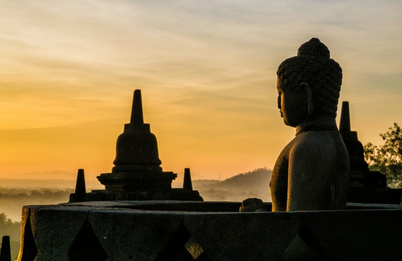
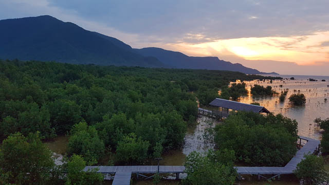

Sidik Riders
"A website for Fun and Anchor"


ABOUT ME
Sidik Hidayatullah. Nov '93.
A wanderer in the world of imagination. Motion picture enthusiast. A Koreaboo.
Find me here!
-
Pendapat Saya Tentang Proses Pembuatan Websites
Sejatinya website yang ingin saya buat ada berbagai banyak macam, namun untuk website official pertama saya, saya ingin membuat website tentang pariwisata dan paket wis...[Continue Reading]
Borobudur Sunrise
A unique and tranquil atmosphere could be well impressed by having sun rise from the top of the Borobudur. Catch pictures of the sun, rising between the beautiful Merbabu and Merapi volcanoes. Having enjoyed the sun rise, we explore the villages nearby the temple by traditional horse cart to the village and local market. This...[Continue Reading]
LOOK WHAT YOU HAVE DONE, KARIMUNJAWA ISLAND SUNSET
The traveling and the knowledge about new places is taking over and I would like to share my observations with you. This post will be mostly photographs but also facts and insights to support the visuals. Hope you will follow my journey. Rant over. Here are some nice pictures of Karimunjawa Island sunset when we were at the mangroves park, very cool and I really enjoyed myself...[Continue Reading]